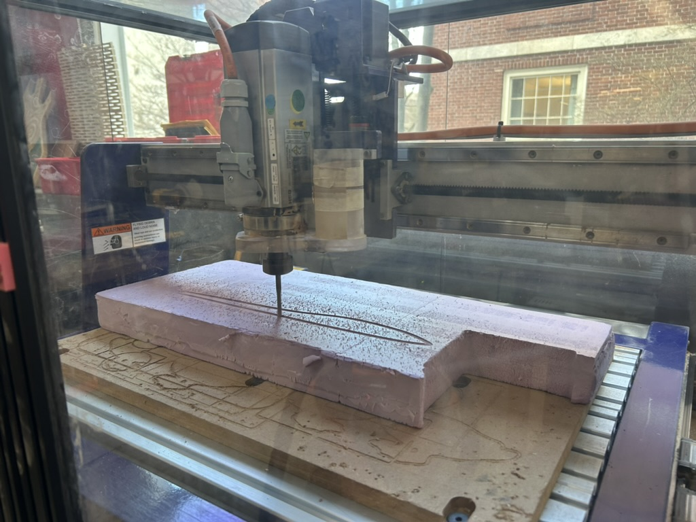
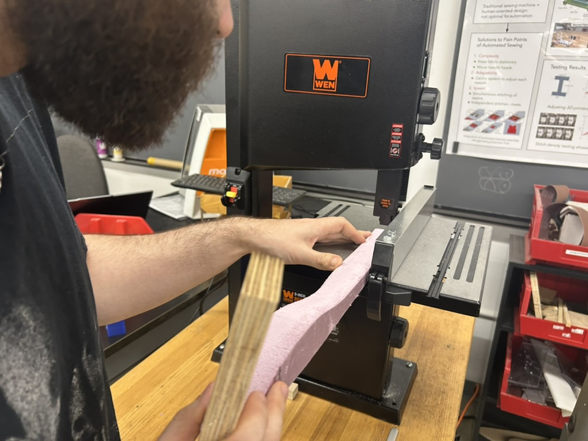
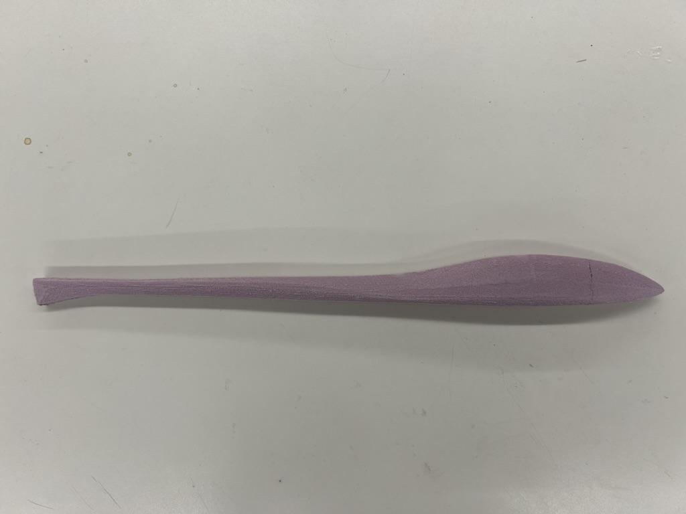
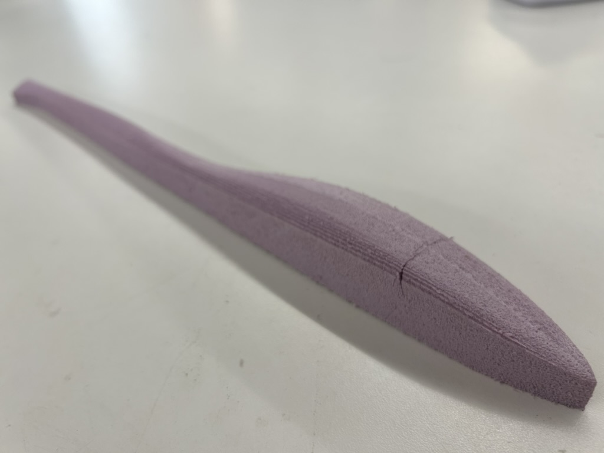
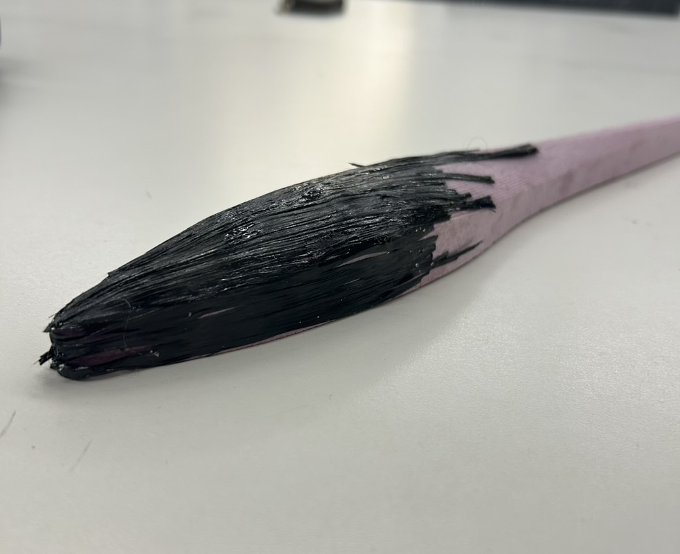
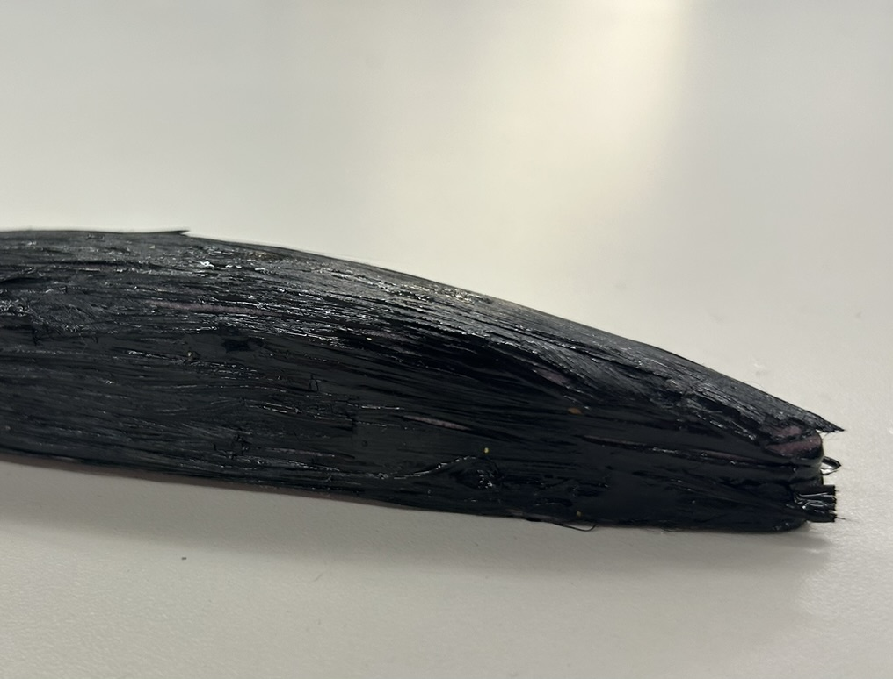

<div class="textcontainer">
<p class="margin"> </p>
<h3>Week 8: CNC Milling</h3>
<h4>Testing the Fuselage</h4>
<p>I made half of my fuselage on the CNC machine. I treated this week as a way to test what the process would be if I were to actually make a fuselage for my final project.
Key takeaways: I need it to be bigger and I need to order carbon fiber sheets</p>
<p>Here's the rundown (for future me to redo, as well): I used insulating foam. I secured it using double sided tape.
I used twwo different mill bits, the big one (0.25in (SLOW)) to get a rough pass, the short one (0.125in) for the finishing pass, and then the big one again to cut it out of the entire foam (profile cut).
Note that the foam wasn't totally flat so I centered the z at a lower point.
Also cool trick on Shopbot: click the modeling tab on left hand side, click on 3D model, and create vector boundary. It creates a perfect outline!
</p>
<p> <p></p>
</p>
<p>I had miscalculated the z stuff so Bobby helped me reduce the thickness of this fuselage (see blow).</p>
<p> <p></p>
</p>
<p> But here it is!! So smooth! So awesome! Yay 3D CNC!</p>
<p> <p></p>
<p></p> </p>
<p> As for the post-processing, I wanted to try out carbon fiber because that is what most model airplanes use.
I mixed up some epoxy and by Nathan's suggestion, took the fine carbon fiber strands and folded them twice to get thicker strands to then glue on.
This was a tedious process, so I definitely will order carbon fiber sheets if I do this for the final project.
I also will use saran wrap before the carbon fiber so the epoxy doesn't soak up into the foam so easy.
You'll see that I didn't wrap the entire fuselage but I knew that I wouldn't be using it anyway, and this was a good test! So here is the tip of the fuselage wrapped!
</p>
<p> <p></p>
<p></p> </p>
</div>